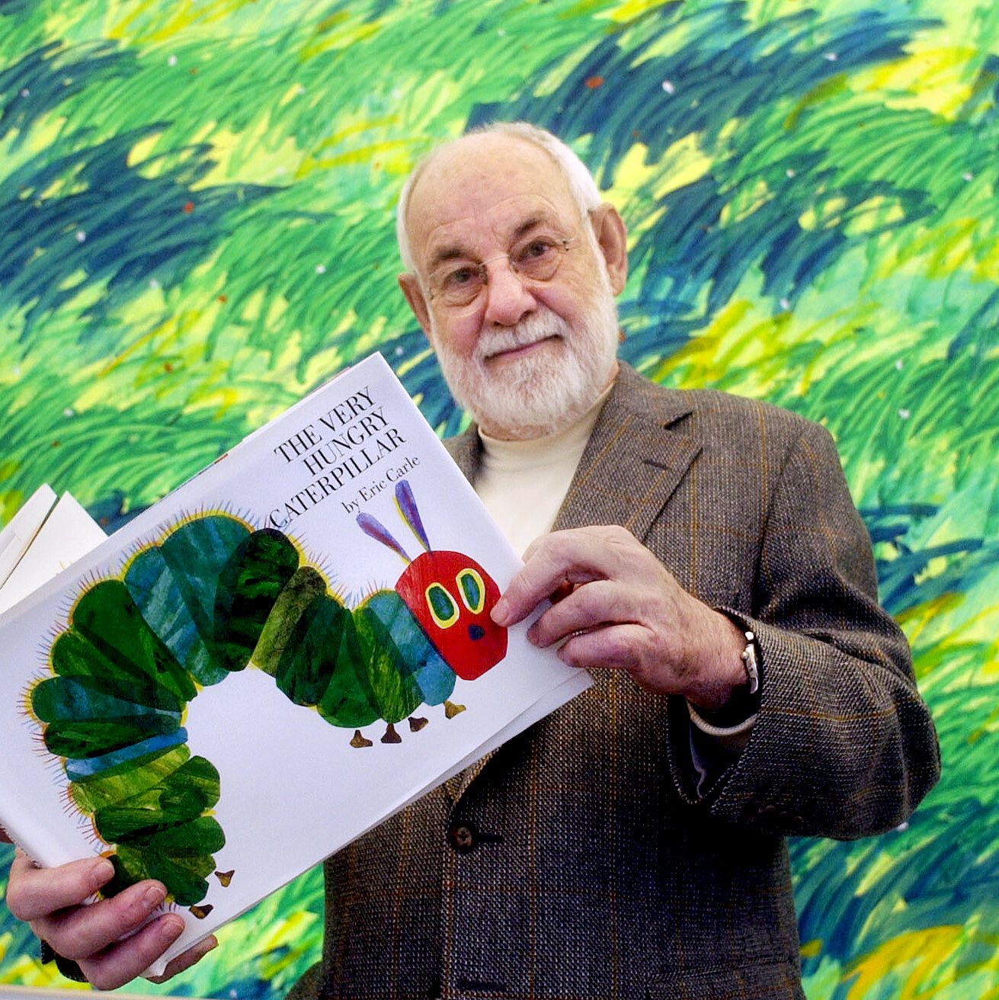

Eric Carle was an American author, designer and illustrator of children's books. His picture book The Very Hungry Caterpillar, first published in 1969, has been translated into more than 66 languages and sold more than 50 million copies. His career as an illustrator and children's book author took off after he collaborated on Brown Bear, Brown Bear, What Do You See?. He illustrated more than 70 books, most of which he also wrote, and more than 145 million copies of his books have been sold around the world
